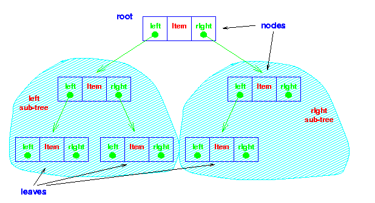
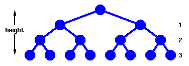

| Data Structures and Algorithms |
| 4.3 Trees |
You now have a recursively defined data structure. (It is also possible to define a list recursively: can you see how?)

The nodes at the lowest levels of the tree (the ones with no sub-trees) are called leaves.
In an ordered binary tree,
The AddToCollection method is, naturally, recursive. [ Load the AddToCollection method.]
Similarly, the FindInCollection method is recursive. [ Load the FindInCollection method.]
|  |
This forms a complete tree, whose height is defined as the number of links from the root to the deepest leaf. |
First, we need to work out how many nodes, n, we have in such a tree of height, h.
Now,
n = 1 + 21 + 22 + .... + 2hFrom which we have,
n = 2h+1 - 1and
h = floor( log2n )
Examination of the Find method shows that in the worst case, h+1 or ceiling( log2n ) comparisons are needed to find an item. This is the same as for binary search.
However, Add also requires ceiling( log2n ) comparisons to determine where to add an item. Actually adding the item takes a constant number of operations, so we say that a binary tree requires O(logn) operations for both adding and finding an item - a considerable improvement over binary search for a dynamic structure which often requires addition of new items.
Deletion is also an O(logn) operation.
What will happen? Think before you click here!
This problem is readily overcome: we use a structure known as a heap. However, before looking at heaps, we should formalise our ideas about the complexity of algorithms by defining carefully what O(f(n)) means.
Key terms |
|
Continue on to Complexity (PS) Continue on to Complexity (HTML) Back to the Table of Contents |